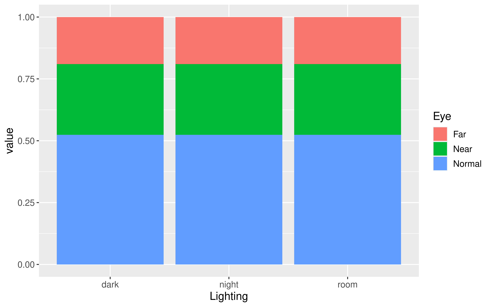

library(mosaicData)
mod1 <- lm(price ~ centralAir, data = SaratogaHouses)
mod2 <- lm(price ~ centralAir + waterfront, data = SaratogaHouses)
mod3 <- lm(price ~ centralAir + waterfront + age + livingArea + bathrooms, data = SaratogaHouses)
mod4 <- lm(price ~ centralAir + waterfront + age + livingArea + bathrooms + sewer, data = SaratogaHouses)
Chi-Squared Tests
Kelly McConville
Stat 100
Week 14 | Fall 2023
Announcements
- Make sure to sign up for an oral exam
- Due Tues, Dec 5th at 5pm: P-Set 9
- Due Thurs, Dec 7th at 5pm: Extra Credit Lecture Quiz
- RSVP for the
ggpartyby end of today: bit.ly/ggpartyf23
Goals for Today
- Comparing models
- What didn’t we cover?
- Chi-squared tests
- Wrap-up
Multiple Linear Regression
Linear regression is a flexible class of models that allow for:
Both quantitative and categorical explanatory variables.
Multiple explanatory variables.
Curved relationships between the response variable and the explanatory variable.
BUT the response variable is quantitative.
How do I pick the BEST model?
Comparing Models
Suppose I built 4 different models to predict the price of a Saratoga Springs house. Which is best?
Big question! Take Stat 139: Linear Models to learn systematic model selection techniques.
We will explore one approach. (But there are many possible approaches!)
Comparing Models
Suppose I built 4 different model. Which is best?
- Pick the best model based on some measure of quality.
Measure of quality: \(R^2\) (Coefficient of Determination)
\[\begin{align*} R^2 &= \mbox{Percent of total variation in y explained by the model}\\ &= 1- \frac{\sum (y - \hat{y})^2}{\sum (y - \bar{y})^2} \end{align*}\]
Strategy: Compute the \(R^2\) value for each model and pick the one with the highest \(R^2\).
Comparing Models with \(R^2\)
Strategy: Compute the \(R^2\) value for each model and pick the one with the highest \(R^2\).
library(mosaicData)
mod1 <- lm(price ~ centralAir, data = SaratogaHouses)
mod2 <- lm(price ~ centralAir + waterfront, data = SaratogaHouses)
mod3 <- lm(price ~ centralAir + waterfront + age + livingArea + bathrooms, data = SaratogaHouses)
mod4 <- lm(price ~ centralAir + waterfront + age + livingArea + bathrooms + sewer, data = SaratogaHouses)Strategy: Compute the \(R^2\) value for each model and pick the one with the highest \(R^2\).
# A tibble: 1 × 12
r.squared adj.r.squared sigma statistic p.value df logLik AIC BIC
<dbl> <dbl> <dbl> <dbl> <dbl> <dbl> <dbl> <dbl> <dbl>
1 0.111 0.110 92866. 215. 6.83e-46 1 -22217. 44441. 44457.
# ℹ 3 more variables: deviance <dbl>, df.residual <int>, nobs <int># A tibble: 1 × 12
r.squared adj.r.squared sigma statistic p.value df logLik AIC BIC
<dbl> <dbl> <dbl> <dbl> <dbl> <dbl> <dbl> <dbl> <dbl>
1 0.136 0.135 91536. 136. 1.20e-55 2 -22192. 44392. 44414.
# ℹ 3 more variables: deviance <dbl>, df.residual <int>, nobs <int># A tibble: 1 × 12
r.squared adj.r.squared sigma statistic p.value df logLik AIC BIC
<dbl> <dbl> <dbl> <dbl> <dbl> <dbl> <dbl> <dbl> <dbl>
1 0.560 0.559 65402. 438. 1.02e-303 5 -21610. 43233. 43271.
# ℹ 3 more variables: deviance <dbl>, df.residual <int>, nobs <int># A tibble: 1 × 12
r.squared adj.r.squared sigma statistic p.value df logLik AIC BIC
<dbl> <dbl> <dbl> <dbl> <dbl> <dbl> <dbl> <dbl> <dbl>
1 0.560 0.558 65419. 313. 2.62e-301 7 -21609. 43236. 43285.
# ℹ 3 more variables: deviance <dbl>, df.residual <int>, nobs <int>Problem: As we add predictors, the \(R^2\) value will only increase.
Comparing Models with \(R^2\)
Problem: As we add predictors, the \(R^2\) value will only increase.
And in Week 6, we said:
Guiding Principle: Occam’s Razor for Modeling
“All other things being equal, simpler models are to be preferred over complex ones.” – ModernDive
Comparing Models with the Adjusted \(R^2\)
New Measure of quality: Adjusted \(R^2\) (Coefficient of Determination)
\[\begin{align*} \mbox{adj} R^2 &= 1- \frac{\sum (y - \hat{y})^2}{\sum (y - \bar{y})^2} \left(\frac{n - 1}{n - p - 1} \right) \end{align*}\]
where \(p\) is the number of explanatory variables in the model.
Now we will penalize larger models.
Strategy: Compute the adjusted \(R^2\) value for each model and pick the one with the highest adjusted \(R^2\).
Strategy: Compute the adjusted \(R^2\) value for each model and pick the one with the highest adjusted \(R^2\).
# A tibble: 1 × 12
r.squared adj.r.squared sigma statistic p.value df logLik AIC BIC
<dbl> <dbl> <dbl> <dbl> <dbl> <dbl> <dbl> <dbl> <dbl>
1 0.111 0.110 92866. 215. 6.83e-46 1 -22217. 44441. 44457.
# ℹ 3 more variables: deviance <dbl>, df.residual <int>, nobs <int># A tibble: 1 × 12
r.squared adj.r.squared sigma statistic p.value df logLik AIC BIC
<dbl> <dbl> <dbl> <dbl> <dbl> <dbl> <dbl> <dbl> <dbl>
1 0.136 0.135 91536. 136. 1.20e-55 2 -22192. 44392. 44414.
# ℹ 3 more variables: deviance <dbl>, df.residual <int>, nobs <int># A tibble: 1 × 12
r.squared adj.r.squared sigma statistic p.value df logLik AIC BIC
<dbl> <dbl> <dbl> <dbl> <dbl> <dbl> <dbl> <dbl> <dbl>
1 0.560 0.559 65402. 438. 1.02e-303 5 -21610. 43233. 43271.
# ℹ 3 more variables: deviance <dbl>, df.residual <int>, nobs <int># A tibble: 1 × 12
r.squared adj.r.squared sigma statistic p.value df logLik AIC BIC
<dbl> <dbl> <dbl> <dbl> <dbl> <dbl> <dbl> <dbl> <dbl>
1 0.560 0.558 65419. 313. 2.62e-301 7 -21609. 43236. 43285.
# ℹ 3 more variables: deviance <dbl>, df.residual <int>, nobs <int>What data structures have we not tackled in Stat 100?
What Else?
Which data structures/variable types are we missing in this table?
| Response | Explanatory | Numerical_Quantity | Parameter | Statistic |
|---|---|---|---|---|
| quantitative | - | mean | \(\mu\) | \(\bar{x}\) |
| categorical | - | proportion | \(p\) | \(\hat{p}\) |
| quantitative | categorical | difference in means | \(\mu_1 - \mu_2\) | \(\bar{x}_1 - \bar{x}_2\) |
| categorical | categorical | difference in proportions | \(p_1 - p_2\) | \(\hat{p}_1 - \hat{p}_2\) |
| quantitative | quantitative | correlation | \(\rho\) | \(r\) |
| quantitative | mix | model coefficients | \(\beta_i\)s | \(\hat{\beta}_i\)s |
Inference for Categorical Variables
Consider the situation where:
Response variable: categorical
Explanatory variable: categorical
Parameter of interest: \(p_1 - p_2\)
- This parameter of interest only makes sense if both variables only have two categories.
It is time to learn how to study the relationship between two categorical variables when at least one has more than two categories.
Hypotheses
\(H_o\): The two variables are independent.
\(H_a\): The two variables are dependent.
Example
Near-sightedness typically develops during the childhood years. Quinn, Shin, Maguire, and Stone (1999) explored whether there is a relationship between the type of light children were exposed to and their eye health based on questionnaires filled out by the children’s parents at a university pediatric ophthalmology clinic.
library(tidyverse)
library(infer)
# Import data
eye_data <- read_csv("data/eye_lighting.csv")
# Contingency table
eye_data %>%
count(Lighting, Eye)# A tibble: 9 × 3
Lighting Eye n
<chr> <chr> <int>
1 dark Far 40
2 dark Near 18
3 dark Normal 114
4 night Far 39
5 night Near 78
6 night Normal 115
7 room Far 12
8 room Near 41
9 room Normal 22Eyesight Example
Does there appear to be a relationship/dependence?
Test Statistic
Need a test statistic!
Won’t be a single sample statistic.
Needs to measure the discrepancy between the observed sample and the sample we’d expect to see if \(H_o\) (no relationship) were true.
Would be nice if its null distribution could be approximated by a known probability model.
Sample Result Tables
Observed Sample Table
Expected Sample Table
Question: If \(H_o\) were correct, is this the table that we’d expect to see?
| dark | night | room | Sum | |
|---|---|---|---|---|
| Far | 53 | 53 | 53 | 159 |
| Near | 53 | 53 | 53 | 159 |
| Normal | 53 | 53 | 53 | 159 |
| Sum | 159 | 159 | 159 | 477 |
Sample Result Tables
Observed Sample Table
Expected Sample Table
Question: If \(H_o\) were correct, what table would we expect to see?
Want a \(H_o\) table that respects the overall eye condition proportions:
\[\hat{p}_{far} = 91/479\]
\[\hat{p}_{nor} = 251/479\]
\[\hat{p}_{nea} = 137/479\]
Sample Result Tables
Observed Sample Table
Expected Sample Table
Question: If \(H_o\) were correct, what table would we expect to see?
| dark | night | room | Sum | |
|---|---|---|---|---|
| Far | (91/479)172 | (91/479)232 | (91/479)75 | 91 |
| Near | (137/479)172 | (137/479)232 | (137/479)75 | 137 |
| Normal | (251/479)172 | (251/479)232 | (251/479)75 | 251 |
| Sum | 172 | 232 | 75 | 479 |
Still have the same totals but distributed the values differently within the table
Sample Result Tables
Observed Sample Table
Expected Sample Table
Question: If \(H_o\) were correct, what table would we expect to see?
| dark | night | room | Sum | |
|---|---|---|---|---|
| Far | 32.7 | 44.1 | 14.2 | 91.0 |
| Near | 49.2 | 66.4 | 21.5 | 137.1 |
| Normal | 90.1 | 121.6 | 39.3 | 251.0 |
| Sum | 172.0 | 232.1 | 75.0 | 479.1 |
Expected Table
How does this table represent \(H_o\)?
| dark | night | room | Sum | |
|---|---|---|---|---|
| Far | 32.68 | 44.08 | 14.25 | 91.01 |
| Near | 49.19 | 66.35 | 21.45 | 136.99 |
| Normal | 90.13 | 121.57 | 39.30 | 251.00 |
| Sum | 172.00 | 232.00 | 75.00 | 479.00 |

Test Statistic
Want the test statistic to quantify the difference between the observed table and the expected table.
| dark | night | room | Sum | |
|---|---|---|---|---|
| Far | 40 | 39 | 12 | 91 |
| Near | 18 | 78 | 41 | 137 |
| Normal | 114 | 115 | 22 | 251 |
| Sum | 172 | 232 | 75 | 479 |
| dark | night | room | Sum | |
|---|---|---|---|---|
| Far | 32.68 | 44.08 | 14.25 | 91 |
| Near | 49.19 | 66.35 | 21.45 | 137 |
| Normal | 90.13 | 121.57 | 39.30 | 251 |
| Sum | 172.00 | 232.00 | 75.00 | 479 |
For each cell: Compute a Z-score!
\[\begin{align*} \mbox{Z-score} &= \frac{\mbox{stat - mean}}{\mbox{SE}} \\ & = \frac{\mbox{observed - expected}}{\sqrt{\mbox{expected}}} \end{align*}\]
Test Statistic
Want the test statistic to quantify the difference between the observed table and the expected table.
| dark | night | room | |
|---|---|---|---|
| Far | 1.28 | -0.76 | -0.60 |
| Near | -4.45 | 1.43 | 4.22 |
| Normal | 2.51 | -0.60 | -2.76 |
Test Statistic
Test Statistic Formula:
\[\begin{align*} \chi^2 = \sum \left(\frac{\mbox{observed - expected}}{\sqrt{\mbox{expected}}} \right)^2 \end{align*}\]
Response: Eye (factor)
Explanatory: Lighting (factor)
# A tibble: 1 × 1
stat
<dbl>
1 56.5Questions:
- Is a test statistic unusual if it is a large number or a small number?
- Is 56.5 unusual under \(H_o\)?
Generating the Null Distribution
The Null Distribution
Key Observations about the distribution:
Smallest possible value?
Shape?
Is our observed test statistic of 56.5 unusual?
The P-value
Approximating the Null Distribution
If there are at least 5 observations in each cell, then
\[ \mbox{test statistic} \sim \chi^2(df = (k - 1)(j - 1)) \] where \(k\) is the number of categories in the response variable and \(j\) is the number of categories in the explanatory variable.
The \(df\) controls the center and spread of the distribution.
The Chi-Squared Test
Pearson's Chi-squared test
data: table(eye_data$Eye, eye_data$Lighting)
X-squared = 56.513, df = 4, p-value = 1.565e-11Conclusions?
Causal link between room lighting at bedtime and eye conditions?
Decisions, decisions…
(Some of the) Course Learning Objectives
Learn how to analyze data in
R.Master creating graphs with
ggplot2.Apply data wrangling operations with
dplyr.Translate a research problem into a set of relevant questions that can be answered with data.
Reflect on how sample design structures impact potential conclusions.
Appropriately apply and draw inferences from a statistical model, including quantifying and interpreting the uncertainty in model estimates.
Develop a reproducible workflow using
RQuarto documents.
Checklist of Remaining Stat 100 Items
🦜 Sign up for an oral exam slot.
✅ Finish P-Set 9 by 5pm on Tuesday.
⭐ Complete the Extra Credit Lecture Quiz by 5pm on Thursday.
❓ Come by office hours with any questions while studying for the final exam.
‼️ Complete the oral exam on Dec 13th or 14th and the in-class on Dec 15th at 9am - noon.
🎉 Attend the ggparty on Thursday at noon in SC 316.
📊 Consider what other stats classes to take now that I am 25% of the way to a stats secondary.
🌲 Add a calendar note to email Prof McConville on 12/4/33 to show her I still know how to interpret a p-value.